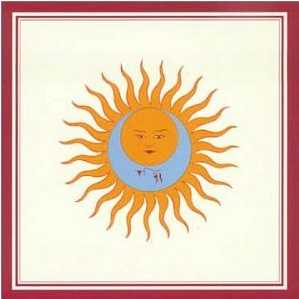
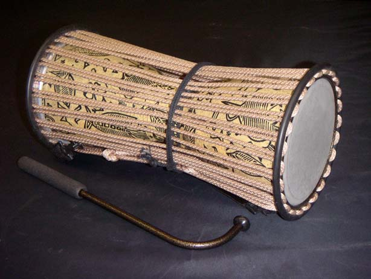
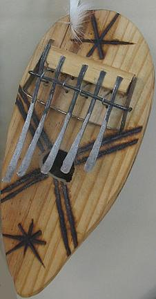
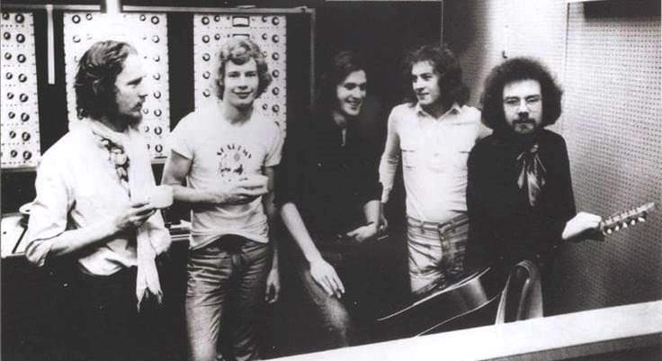
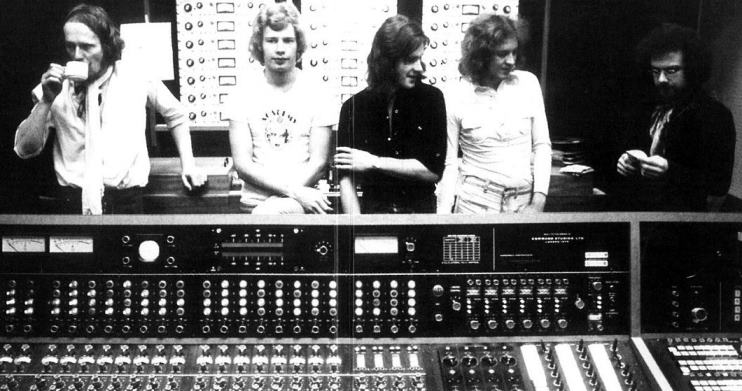
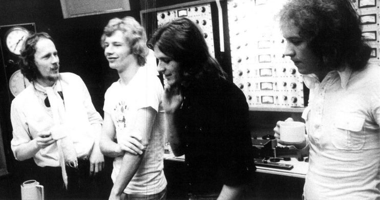
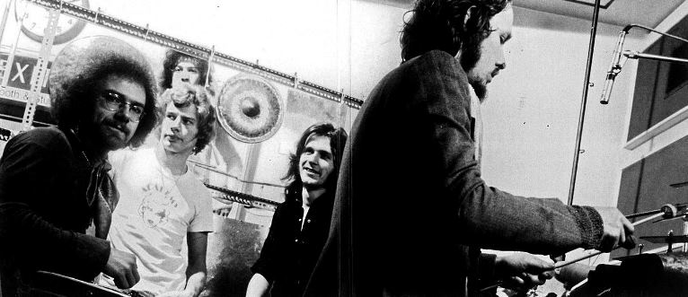
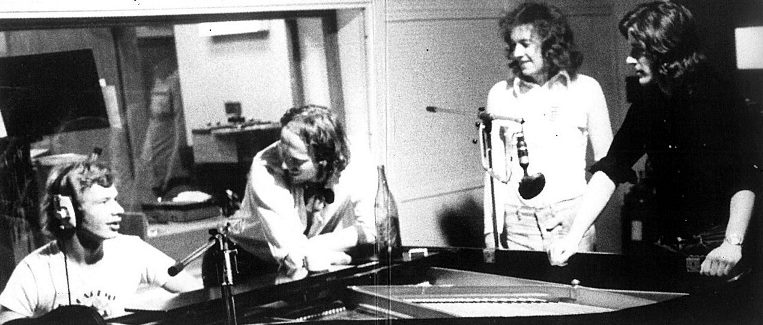
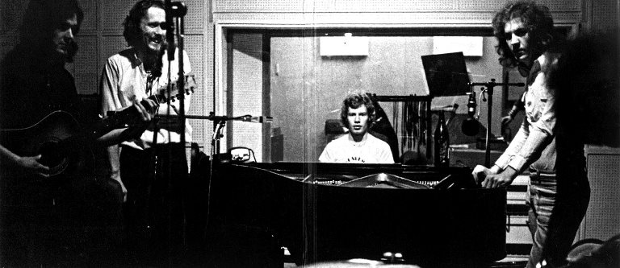

Larks' tongues in aspic
Larks' tongues in aspic
|
|
|
 (Lenguas de alondras en aspic)
Editado originalmente en 1973 Nueva formación; Bill Bruford dejó Yes en pleno auge para unirse a la aventura musical de Fripp. Un bajista revelación, una percusión anárquica, un violín misterioso. El primer álbum de una trilogía perfecta. Ezquizofrenia y cordura, suma tensión y relajación extrema, terror y nostalgia, incertidumbre y sorpresa, a cada momento. El oyente es golpeado por los contrastes. Aquí comienza la saga de partes de Larks' tongues in aspic, con una forma musical que identificaría al grupo a través del tiempo, conformada por macizos acordes de guitarra y una arrolladora sección rítmica.
Letras de Richard Palmer-James. Música: - temas 1 y 5: Cross, Fripp, Wetton, Bruford, Muir - temas 2 y 4: Fripp y Wetton - tema 3: Cross y Fripp - tema 6: Fripp Notas * El lado A del disco de vinilo repite la estructura de los lados A de los 2 primeros discos: lo abría un tema frenético con partes bien heavy metal (Larks' Part I), un pequeño descanso en el medio con una suave balada (Book of saturday) , y lo cerraba un tema lento sinfónico con melotrón (Exiles). ¿Casualidad?. * Un tramo de Larks' tongues in aspic era de una pieza jazzera grabada en agosto del '71 por la formación que realizó "Islands", que no fue incluida en ese album. Se incorporó como bonus track en la edición 40 aniversario de "Islands" con el nombre A peacemaking stint unrolls. * El solo de guitarra de Book of saturday está reproducido al revés. * El motivo introductorio del tema Exiles, tocado con melotrón, era base de una pieza instrumental que tocaba la primera formación de KC en el '69, llamada Mantra (editada en el album "Epitaph"), pero en aquellos tiempos y las primeras veces que esta formación tocó el tema en vivo a fines del '72, era interpretado por la guitarra de Fripp. * En Exiles Cross toca flauta dulce y Wetton toca piano, no acreditados en la cubierta del disco. * The talking drum nació de una improvisación. * Sobre Larks’ Tongues In Aspic, Part Two: "Con más que un simple guiño a «La Consagración de la Primavera» de Stravinsky, la introducción, ferozmente mordaz, en 5/4, combinó el rigor intelectual de los compositores del siglo XX con el impulso primigenio del rock. … Fripp se había preguntado a menudo cómo sonaría Hendrix interpretando a Bartók; esta fue la respuesta más acertada que podía esperar. Si «Schizoid Man» era un símbolo de la capacidad musical y el carácter del Crimson original, «Larks’ Tongues In Aspic, Part Two» se convirtió en una melodía emblemática de igual estatura, ambición y autenticidad. Y rockeó, provocando algunas de las interpretaciones más frenéticas y electrizantes de cada miembro del grupo. … Este Crimson fue sin duda un cambio radical y es fácil creer la afirmación de Fripp de que esta era la música que había estado buscando desde la separación de la formación original. Despojándose de gran parte del vocabulario jazzístico de la era de 'Islands' en favor de un aspecto más abrasivo, le dio la espalda al pasado." (Sid Smith, de su libro In the court of King Crimson)
* Aspic es un plato frío de cocina consistente en un manjar (carne, verduras, mariscos, frutas, trufas, caviar, pescados, etc.) cubierto de gelatina y preparado en un molde. El título del album fue propuesto por Jamie Muir, por lo que le significaba la música que estaban grabando: algo frágil y delicado "encajado" en algo corrosivo y ácido.
* La idea de la portada del disco, con la imagen de la luna dentro de la del sol, está presente en la carta de tarot La luna. Vuelve a aparecer el concepto de la reconciliación de los opuestos, abordado por las letras de Sinfield en los primeros discos (en especial en el tema Moonchild). "Fripp ideó el diseño del sol y la luna, que reflejaba su interés por la teoría y el simbolismo tántricos. La portada resultante expresó con claridad la creencia de Fripp en el valor de los opuestos, trabajando juntos para crear una unidad a la vez exótica y mágica." (Sid Smith, de su libro In the court of King Crimson)
* Instrumentos percusivos africanos usados por Muir. A la izquierda, el talking drum; a la derecha, el kalimba, tocado en la intro de Larks' tongues in aspic - Part I .  
KC en estudio grabando el disco, a fines del '72.      
|